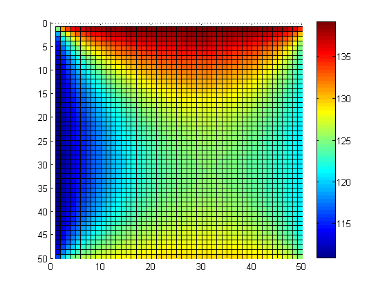

1.4 La méthode d’élimination de Gauss
Nous avons vu dans la section précédente comment résoudre des systèmes d’équations linéaires sous forme échelonnée ou sous forme échelonnée réduite. Dans cette section, nous voulons voir de quelle façon il est possible de transformer tout système d’équations linéaires sous l’une de ces deux formes.
Pour être en mesure de transformer un système d’équations linéaires, nous allons avoir besoin de connaître les opérations qui permettent de modifier des équations linéaires tout en conservant le même ensemble solution.
Les opérations élémentaires sur les équations vont permettre de modifier le système d’équations linéaires en un système équivalent, notamment sous la forme d’un système échelonné.
Définition 1.10 (Opérations élémentaires sur les équations linéaires) Soit \(L_i\) la ième équation d’un système d’équations linéaires. Les sont les suivantes:
- Nous pouvons additionner ou soustraire deux équations: \(L_i \pm L_j \rightarrow L_i\)
- Nous pouvons multiplier une équation par une constante non-nulle: \(kL_i \rightarrow L_i\)
- Nous pouvons intervertir deux équations: \(L_i \leftrightarrow L_j\)
Maintenant, nous voulons utiliser les opérations élémentaires sur les lignes pour transformer la matrice augmentée sous la forme échelonnée. C’est ce que nous nommons la méthode de Gauss.
Il est parfois possible que nous devions interchanger deux lignes pour obtenir une matrice sous forme échelonnée. L’exemple suivant permettra de montrer comment faire.
Nous obtenons parfois une infinité de solutions à notre système d’équations linéaires.
Nous obtenons parfois aucune solution à notre système d’équations linéaires.
1.4.1 Une application
Figure 1.3: Plaque chauffée.
Pour obtenir une meilleure précision dans nos calculs, nous pourrions raffiner notre grille, c’est-à-dire lui ajouter des points. Par exemple, si nous prenons une grille \(5\times 5\), nous obtenons le système d’équations linéaires présenté sous la forme d’une matrice augmentée suivant: \[ \left[ \begin{smallmatrix} 4&-1&0&0&0&-1&0&0&0&0&0&0&0&0&0&0&0&0&0&0&0&0&0&0&0&250\\ -1&4&-1&0&0&0&-1&0&0&0&0&0&0&0&0&0&0&0&0&0&0&0&0&0&0&140\\ 0&-1&4&-1&0&0&0&-1&0&0&0&0&0&0&0&0&0&0&0&0&0&0&0&0&0&140\\ 0&0&-1&4&-1&0&0&0&-1&0&0&0&0&0&0&0&0&0&0&0&0&0&0&0&0&140\\ 0&0&0&-1&4&0&0&0&0&-1&0&0&0&0&0&0&0&0&0&0&0&0&0&0&0&260\\ -1&0&0&0&0&4&-1&0&0&0&-1&0&0&0&0&0&0&0&0&0&0&0&0&0&0&110\\ 0&-1&0&0&0&-1&4&-1&0&0&0&-1&0&0&0&0&0&0&0&0&0&0&0&0&0&0\\ 0&0&-1&0&0&0&-1&4&-1&0&0&0&-1&0&0&0&0&0&0&0&0&0&0&0&0&0\\ 0&0&0&-1&0&0&0&-1&4&-1&0&0&0&-1&0&0&0&0&0&0&0&0&0&0&0&0\\ 0&0&0&0&-1&0&0&0&-1&4&0&0&0&0&-1&0&0&0&0&0&0&0&0&0&0&120\\ 0&0&0&0&0&-1&0&0&0&0&4&-1&0&0&0&-1&0&0&0&0&0&0&0&0&0&110\\ 0&0&0&0&0&0&-1&0&0&0&-1&4&-1&0&0&0&-1&0&0&0&0&0&0&0&0&0\\ 0&0&0&0&0&0&0&-1&0&0&0&-1&4&-1&0&0&0&-1&0&0&0&0&0&0&0&0\\ 0&0&0&0&0&0&0&0&-1&0&0&0&-1&4&-1&0&0&0&-1&0&0&0&0&0&0&0\\ 0&0&0&0&0&0&0&0&0&-1&0&0&0&-1&4&0&0&0&0&-1&0&0&0&0&0&120\\ 0&0&0&0&0&0&0&0&0&0&-1&0&0&0&0&4&-1&0&0&0&-1&0&0&0&0&110\\ 0&0&0&0&0&0&0&0&0&0&0&-1&0&0&0&-1&4&-1&0&0&0&-1&0&0&0&0\\ 0&0&0&0&0&0&0&0&0&0&0&0&-1&0&0&0&-1&4&-1&0&0&0&-1&0&0&0\\ 0&0&0&0&0&0&0&0&0&0&0&0&0&-1&0&0&0&-1&4&-1&0&0&0&-1&0&0\\ 0&0&0&0&0&0&0&0&0&0&0&0&0&0&-1&0&0&0&-1&4&0&0&0&0&-1&120\\ 0&0&0&0&0&0&0&0&0&0&0&0&0&0&0&-1&0&0&0&0&4&-1&0&0&0&240\\ 0&0&0&0&0&0&0&0&0&0&0&0&0&0&0&0&-1&0&0&0&-1&4&-1&0&0&130\\ 0&0&0&0&0&0&0&0&0&0&0&0&0&0&0&0&0&-1&0&0&0&-1&4&-1&0&130\\ 0&0&0&0&0&0&0&0&0&0&0&0&0&0&0&0&0&0&-1&0&0&0&-1&4&-1&130\\ 0&0&0&0&0&0&0&0&0&0&0&0&0&0&0&0&0&0&0&-1&0&0&0&-1&4&250\\ \end{smallmatrix} \right] \] Comme nous pouvons le constater, le système d’équations linéaires devient rapidement beaucoup trop grand pour le résoudre “à la main”. Nous allons donc utiliser un logiciel de calcul pour le résoudre.
Figure 1.4: Plaque chauffée.
La figure suivante présente le même problème étudié précédemment, mais sur une grille \(50\times 50\).
